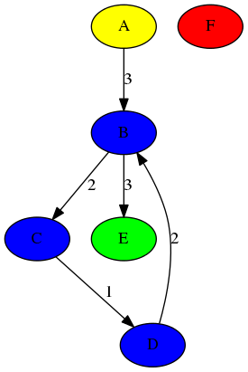
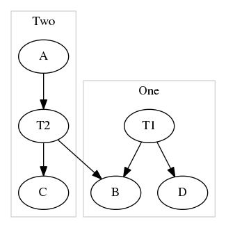

The GRAPH/DOT library provides functions for serializing graph objects as defined by the GRAPH library to/from DOT.
The code is available under the GNU General Public License.
Source:
http://github.com/eschulte/graph.
Functions for reading/writing graphs from/to the graphviz DOT format.
Many graphviz properties and exposed as keyword arguments to the
to-dot function.
(defvar *graph* (populate (make-instance 'digraph)
:nodes '(a b c d e f)
:edges-w-values '(((a b) . 3)
((b c) . 2)
((c d) . 1)
((d b) . 2)
((b e) . 3))))
(let ((ccs (mapcar #‘cons (connected-components graph) ’(1 2 3 4)))) (to-dot-file graph “dot-graph-1.dot” :node-attrs (list (cons :fillcolor (lambda (n) (cdr (assoc-if {member n} ccs)))) (cons :style (constantly “filled”)) (cons :colorscheme (constantly “set34”)))))

Or less colorfully.
(setf *graph* (populate (make-instance 'digraph)
:edges '((A T2) (T1 B) (T2 B) (T2 C) (T1 D))))
(let ((s1 (make-subgraph :attributes '(("color" . "lightgrey")
("label" . "One" ))
:node-list (first
(connected-components
*graph*
:type :unilateral))))
(s2 (make-subgraph :attributes '(("color" . "lightgrey")
("label" . "Two" ))
:node-list (second
(connected-components
*graph*
:type :unilateral)))))
(to-dot-file *graph* "dot-graph-2.dot"
:subgraphs (list s1 s2)))

[Function]
from-dot dot-string => result
Parse the DOT format string DOT-STRING into a graph. More robust behavior may be achieved through parsing the output of the dot executable.
[Generic function]
to-dot graph &key stream attributes node-attrs edge-attrs subgraphs ranks => result
Print the dot code representing GRAPH. The keyword argument ATTRIBUTES takes an assoc list with DOT graph attribute (name . value) pairs. NODE-ATTRS and EDGE-ATTRS also take assoc lists of DOT graph attributes and functions taking nodes or edges respectively and returning values. The DOT graph, node, and edge attributes are described at http://www.graphviz.org/doc/info/attrs.html. SUBGRAPHS is a list of SUBGRAPH structures. RANKS is a list of RANK structures.
[Generic function]
to-dot-file graph path &key attributes node-attrs edge-attrs subgraphs ranks => result
Write a dot representation of GRAPH to PATH.
This documentation was prepared with a hacked up version of DOCUMENTATION-TEMPLATE.